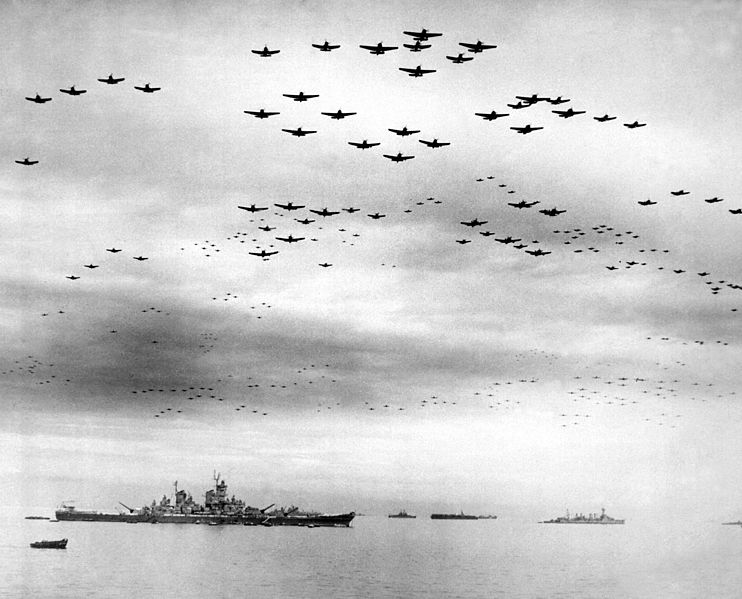

A Brief History of Japan pt. 2
5/26/2014
To recap, in the first part I got up to around the turn of the twentieth century. Japan had modern technology and a military that could match (or defeat) most Western nations: in 1904-5 Japan fought Russia over control of Manchuria and Korea in what some historians now call “World War Zero” since the tactics and death toll were similar to those of the First World War which started a decade later. Furthermore, when Theodore Roosevelt paraded the Great White Fleet around the world in a show of American patriotism/might, the Japanese were not particularly impressed as their battleships were already more advanced than the Americans'. And like any Westernized nation at this time, the Japanese had dreams of Empire.
Japan's first overseas colony was Taiwan, which they acquired after the First Sino-Japanese War in the 1890's. Between that time and the outbreak of World War Two, Japan took Korea, most of China and Southeast Asia and a host of other small islands scattered around the Pacific. The prevailing military technologies of the time (namely aircraft, tanks, and diesel-powered aircraft carriers and submarines) all required one resource that Japan sorely lacked: oil. In the 1930's, America was a major importer of oil to the Japanese empire. But when the other Roosevelt saw how things were going in Europe and China, he had the Japanese cut off.
This put Japan in an awkward position: they had not yet defeated the Chinese forces and they would not be able to support their war against them for much longer without oil and other resources that the Americans were refusing to provide. And here's the part where things get morally questionable (well, they were before, but even more so here): to Japanese leaders, without oil, they would be defeated by China and eventually lose the rest of their holdings in Asia. They would essentially lose everything that they had spent the past 50 years fighting for. So their only option other than to just give up, was to bully America into sending them resources again. The plan was
not to defeat America outright or conquer it -- which no one thought was possible, only to do enough damage to convince the Americans that it would be better to just let the Japanese have the oil and otherwise leave each other alone. I'm not condoning the Japanese attack on Pearl Harbor, I'm just providing the Japanese rationale for doing it in the first place.
And things were looking even better for Japan in December of 1941 if the European context is taken into account. Hitler had swept through Europe, defeated France in 6 weeks (which at the outbreak of the war had actually had the largest military in the world) and was in the process of bombing Britain into submission. On the Eastern Front, Hitler had betrayed his non-aggression pact with Stalin in the summer of 1941 and the blitzkrieg was racing towards Moscow, taking hundreds of miles of territory per day. By December, Moscow was surrounded and on December 7th, 1941, Hitler's generals were telling him that the Soviet capital would fall any day, and with it the entire USSR (they turned out to be very wrong, but we only know that in hindsight). Japan figured that the US would be forced to spend most of its resources defending England from Hitler's undivided attention. With the global situation looking this bad for the Allies, the attack on Pearl Harbor did not look like a mistake at all: crippling America's Pacific fleet would give the Japanese time to consolidate their holdings in the Pacific while America would be torn between fighting a long and brutal war with Japan and a desperate defense of Great Britain from Germany.
Of course, in reality, the United States had more than enough resources to do both of those things, and Hitler was unable to conquer Russia after all, which consumed most of his attention for the rest of the war. But Japan had no way of knowing this at the time. And another thing that Japan didn't know at the time was that America's carrier fleet was not docked at Pearl Harbor on December 7th, which meant that what became the most important part of the modern navy was able to survive completely untouched. No one really knew the full potential of aircraft carriers at the time, but since that was all the US had to work with, they figured it out pretty fast. And by June of 1942 after the Japanese fleet was largely destroyed at the Battle of Midway, the war was basically lost, the next few years featured a string of Japanese defeats and the eventual bombing of the Japanese mainland. So why did they keep fighting?
Well, first of all, as my professor said, when the enemy demands unconditional surrender, you're usually not going to do it unless you absolutely have to, because the thing about surrendering with no conditions is you don't know what will happen to you afterwards. But what was happening to them right then was pretty bad: the initial bombings of Japan in 1944 targeted mostly industry and infrastructure in an attempt to destroy the Japanese ability to produce weaponry. But this was ineffective since the factories hadn't been producing anything for months; the US submarine blockade of Japan was the most effective naval blockade in history, it prevented 99% of all cargo ships from reaching Japan and so there were no materials available for the factories to make into weapons. Then the US turned to targeting civilians: the firebombing of Tokyo in March of 1945 killed over 100,000 people (more than either atomic bomb). And then the US went on to firebomb another 66 Japanese cities killing almost a million civilians before the Japanese surrender in August. The Japanese were barely able to fight back at all during this time. So why did they keep going?
Contrary to popular belief, the atomic bombs likely had little to do the Japanese decision to surrender: Japanese cities were being destroyed all the time at this point, what did they care if it was 1 plane or 500 planes doing it? Furthermore, the first atomic bomb was dropped on August 6th, the second on August 9th, but the Japanese didn't surrender until a week later on August 15th. People say that the atomic bombs prevented a deadly invasion of Japan by American soldiers, but the bombs themselves were probably not necessary. On August 9th, Soviet tanks rolled into Manchuria where most of Japan's most elite forces were stationed (the US actually never directly engaged these soldiers during the entire war) and easily defeated them. With this new information about the combat effectiveness of their soldiers, Japan's leaders finally saw that defending Japan from invasion would be hopeless. And they surrendered.


{kind=link}